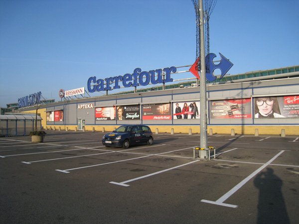

CH Sarni Stok - Carrefour (dawniej Hypernova) – moloch zagraniczny. Dzielnie stawiamy mu opór.

Paradoksalnie w czasie jego budowy Blaszak przeżywał okres prosperity, dzięki zakupom budowlańców. Co wieczór odprawiam magiczne obrządki w intencji upadku naszego rywala.
Sklep ogólnospożywczy (dawniej Ania) – mało znaczący przybytek w centrum osiedla.